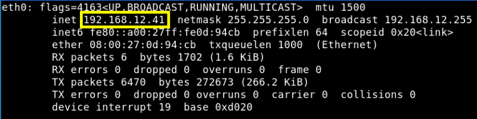
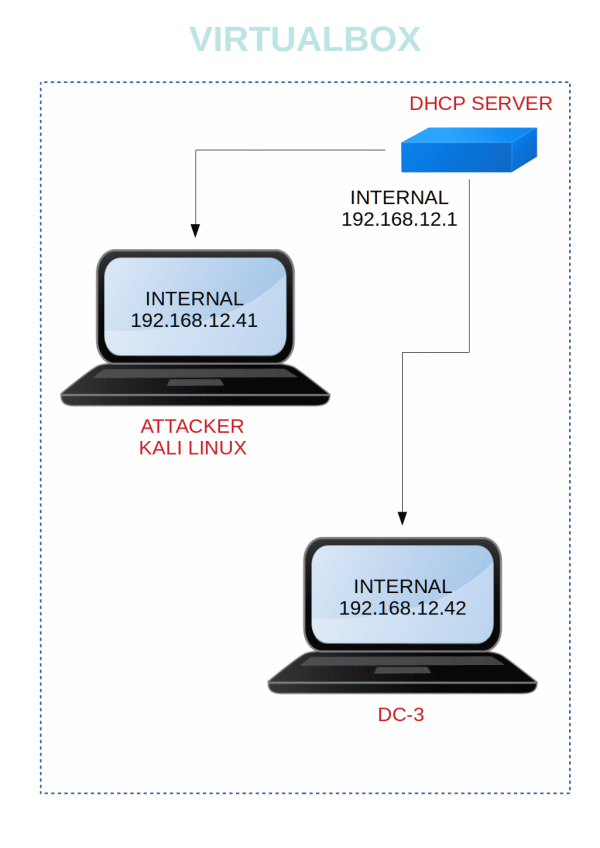

DC-3
▸ DC-3
▸ 1. Scan Network
▸ 4. Enumerate Joomla Site
▸ 5. Exploiting
▸ 5.1 Search exploit
▸ 5.2 Login into Joomla as admin
▸ 5.3 Inject malicious PHP
▪ PHP-reverse shell
▸ 5.4 Execute netcat
▸ 5.5 Search OS exploit
▸ 6. Get the flag
Difficulty: Beginner.
Flag: 1 flag.
Learning:
• Nmap to find opened ports & running services.
• Enumerating Joomla websites
• Searching for Joomla exploits using searchsploit
• Using sqlmap to exploit SQLi vulnerabilities
• Cracking Joomla passwords using john the ripper
• Getting reverse shell from Joomla admins
• Searching for kernel root exploits
Download: http://www.five86.com/downloads/DC-3.zip
Download (Mirror): https://download.vulnhub.com/dc/DC-3.zip
Download (Torrent): https://download.vulnhub.com/dc/DC-3.zip.torrent
Install the machine on VirtualBox:
1. Download the file and extract it.
2. On Virtualbox choose File->Import Appliance.
3. Select the file “ova”.
4. Accept to import.


Watch your Machine IP.

Diagram
 Index
Index